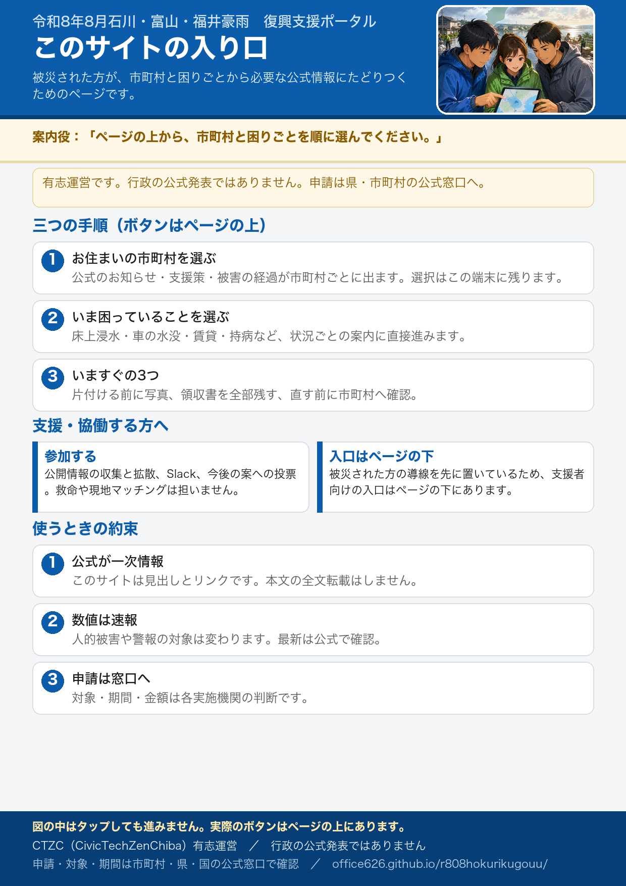

令和8年8月石川・富山・福井豪雨 復興支援ポータル
本サイトは CTZC の有志による運営であり、行政の公式発表ではありません。 申請・問い合わせは石川県・富山県・福井県および各市町村の公式窓口へ。最新情報は必ず公式サイトで確認してください。
いま困っていることを選ぶ
状況ごとに「まずやること」「あとで困ること」「見落としがちな支援」を並べています。
いますぐの3つ
- 片付ける前に写真を撮る 四方向、浸水の深さ、部屋ごと、捨てる家財。あとから撮り直せません。
- 領収書を全部残す 修理・清掃・宿泊・買い直し。支援や保険の請求で必要になります。
- 直す前に市町村へ確認する 先に修理を契約すると、公費の応急修理の対象外になり得ます。
